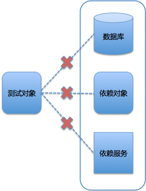

- 00 开篇词 量身定制你的持续交付体系.md.html
- 01 持续交付到底有什么价值？.md.html
- 02 影响持续交付的因素有哪些？.md.html
- 03 持续交付和DevOps是一对好基友.md.html
- 04 一切的源头，代码分支策略的选择.md.html
- 05 手把手教你依赖管理.md.html
- 06 代码回滚，你真的理解吗？.md.html
- 07 “两个披萨”团队的代码管理实际案例.md.html
- 08 测试环境要多少？从现实需求说起.md.html
- 09 测试环境要多少？从成本与效率说起.md.html
- 10 让环境自己说话，论环境自描述的重要性.md.html
- 11 “配置”是把双刃剑，带你了解各种配置方法.md.html
- 12 极限挑战，如何做到分钟级搭建环境？.md.html
- 13 容器技术真的是环境管理的救星吗？.md.html
- 14 如何做到构建的提速，再提速！.md.html
- 15 构建检测，无规矩不成方圆.md.html
- 16 构建资源的弹性伸缩.md.html
- 17 容器镜像构建的那些事儿.md.html
- 18 如何做好容器镜像的个性化及合规检查？.md.html
- 19 发布是持续交付的最后一公里.md.html
- 20 Immutable！任何变更都需要发布.md.html
- 21 发布系统一定要注意用户体验.md.html
- 22 发布系统的核心架构和功能设计.md.html
- 23 业务及系统架构对发布的影响.md.html
- 24 如何利用监控保障发布质量？.md.html
- 25 代码静态检查实践.md.html
- 26 越来越重要的破坏性测试.md.html
- 27 利用Mock与回放技术助力自动化回归.md.html
- 28 持续交付为什么要平台化设计？.md.html
- 29 计算资源也是交付的内容.md.html
- 30 持续交付中有哪些宝贵数据？.md.html
- 31 了解移动App的持续交付生命周期.md.html
- 32 细谈移动APP的交付流水线（pipeline）.md.html
- 33 进阶，如何进一步提升移动APP的交付效率？.md.html
- 34 快速构建持续交付系统（一）：需求分析.md.html
- 35 快速构建持续交付系统（二）：GitLab 解决代码管理问题.md.html
- 36 快速构建持续交付系统（三）：Jenkins 解决集成打包问题.md.html
- 37 快速构建持续交付系统（四）：Ansible 解决自动部署问题.md.html
- 持续交付专栏特别放送 答疑解惑.md.html
- 持续交付专栏特别放送 高效学习指南.md.html
- 结束语 越痛苦的事，越要经常做.md.html
- 捐赠
27 利用Mock与回放技术助力自动化回归
你好，我是王潇俊。今天我和你分享的主题是：利用Mock与回放技术助力自动化回归。
在《代码静态检查实践》和《越来越重要的破坏性测试 》这次的分享中，我介绍了对持续交付有重大影响的两个测试类型，即静态代码检查和破坏性测试。
你可能已经发现，这两种测试正好适用于持续集成和测试管理的一头、一尾：
- 静态代码检查，适合在所有其他测试类型开始之前优先进行，把住第一关；
- 破坏性测试，则适用于集成或验收测试之后，甚至是对系统进行持续长久的测试。
那么，我们现在再一起来看看，持续交付过程中还有哪些测试方法，以及还有哪些问题和难点吧。
持续交付中的测试难点
其实，对于持续交付中的测试来说，自动化回归测试是不可或缺的，占了很大的测试比重。而进行自动化回归测试，就始终会有“三座大山”横在你面前。
“第一座大山”：测试数据的准备和清理。
通常情况下，回归测试的用例是可以复用的，所以比较固定，结果校验也比较确定。而如果要实现回归测试的自动化，就需要保证每次测试时的初始数据尽量一致，以确保测试脚本可复用。
如果每次的数据都不同，那么每次的测试结果也会受到影响。为了做到测试结果的可信赖，就有两种方法：
- 一种是，每次全新的测试都使用全新初始化数据；
- 另一种是，在测试完成后，清除变更数据，将数据还原。
但是，这两种方法的实现，都比较麻烦，而且很容易出错。
“第二座大山”：分布式系统的依赖。
分布式系统因为有服务依赖的问题，所以进行一些回归测试时，也会存在依赖的问题。这个问题，在持续交付中比较难解决：
单元测试时要面对两难选择，测依赖还是不测依赖；
集成测试时，如何保证依赖服务的稳定性，或者说排除由稳定性带来的干扰，所以到底是依赖服务的问题，还是被测服务的问题很难确定；
真实的业务系统中，往往还存在多层依赖的问题，你还要想办法解决被测应用依赖的服务的依赖服务。
我的天呢，“这座大山”简直难以翻越。
“第三座大山”：测试用例的高度仿真。
如何才能模拟出和用户一样的场景，一直困扰着我们。
如果我们的回归测试不是自己设计的假想用例，而是真实用户在生产环境中曾经发生过的实际用例的话，那么肯定可以取得更好的回归测试效果。那么，有没有什么办法或技术能够帮助我们做到这一点呢？
如何翻越这“三座大山”，我在这里给你准备了Mock和回放技术这个两大利器，也就是我接下来要和你重点分享的内容。
两大利器之一Mock
我先来说说什么是Mock：
如果某个对象在测试过程中依赖于另一个复杂对象，而这个复杂对象又很难被从测试过程中剥离出来，那么就可以利用Mock去模拟并代替这个复杂对象。
听起来是不是有点抽象？下面这张图就是Mock定义的一个具象化展示，我们一起来看看吧。

图1 测试过程中，被测对象的外部依赖情况展示
在测试过程中，你可能会遇到这样的情况。你要测试某个方法和对象，而这个被测方法和对象依赖了外部的一些对象或者操作，比如：读写数据库、依赖另外一个对象的实体；依赖另一个外部服务的数据返回。
而实际的测试过程很难实现这三种情况，比如：单元测试环境与数据库的网络不通；依赖的对象接口还没有升级到兼容版本；依赖的外部服务属于其他团队，你没有办法部署等等。
那么，这时，你就可以利用Mock技术去模拟这些外部依赖，完成自己的测试工作。
Mock因为这样的模拟能力，为测试和持续交付带来的价值，可以总结为以下三点：
使测试用例更独立、更解耦。利用Mock技术，无论是单体应用，还是分布式架构，都可以保证测试用例完全独立运行，而且还能保证测试用例的可迁移性和高稳定性。为什么呢？- 因为足够独立，测试用例无论在哪里运行，都可以保证预期结果；而由于不再依赖于外部的任何条件，使得测试用例也不再受到外部的干扰，稳定性也必然得到提升。
提升测试用例的执行速度。由于Mock技术只是对实际操作或对象的模拟，所以运行返回非常快。特别是对于一些数据库操作，或者复杂事务的处理，可以明显缩短整个测试用来的执行时间。- 这样做最直接的好处就是，可以加快测试用例的执行，从而快速得到测试结果，提升整个持续交付流程的效率。
提高测试用例准备的效率。因为Mock技术可以实现对外部依赖的完全可控，所以测试人员在编写测试用例时，无需再去特别考虑依赖端的情况了，只要按照既定方式设计用例就可以了。
那么，如何在测试中使用Mock技术呢？
目前，市场上有很多不同的Mock框架，你可以根据自己的情况进行选择。主要的应用场景可以分为两类：基于对象和类的Mock，基于微服务的Mock。
第一，基于对象和类的Mock
基于对象和类的Mock，我比较推荐使用的框架是Mockito或者EasyMock。
Mockito或者EasyMock这两个框架的实现原理，都是在运行时，为每一个被Mock的对象或类动态生成一个代理对象，由这个代理对象返回预先设计的结果。
这类框架非常适合模拟DAO层的数据操作和复杂逻辑，所以它们往往只能用于单元测试阶段。而到了集成测试阶段，你需要模拟一个外部依赖服务时，就需要基于微服务的Mock粉墨登场了。
第二，基于微服务的Mock
基于微服务的Mock，我个人比较推荐的框架是Weir Mock 和 Mock Server。这两个框架，都可以很好地模拟API、http形式的对象。
从编写测试代码的角度看，Weir Mock 和 Mock Server这两种测试框架实现Mock的方式基本一致：
标记被代理的类或对象，或声明被代理的服务；
通过Mock框架定制代理的行为；
调用代理，从而获得预期的结果。
可见，这两种Mock框架，都很容易被上手使用。
第三，携程的Mock Service实践
在携程，我们一次集成测试，可能依赖的外部服务和数据服务会有几百个，而这几百个服务中很多都属于基础服务，都有被Mock的价值。
所以，携程借鉴了Mock Server的想法，在整个测试环境中构建了一套Mock Service：所有服务的请求，都会优先通过这套系统；同时，所有服务的返回也会被拦截。这套Mock Service看起来就像是一个巨大的代理，代理了所有请求。
那么，测试人员只要去配置自己的哪些请求需要被Mock Service代理就可以了，如果请求的入参相同，且Mock Service中存在该请求曾经的返回，则直接被代理。反之，则透传到真正的服务。
虽然这会增加性能开销，但是对于整体的回归测试来说，价值巨大，而且方便好用、无需编码。
Mock技术，通过模拟，绕过了实际的数据调用和服务调用问题，横在我们面前的“三座大山”中的其中两座，测试数据的准备和清理、分布式系统的依赖算是铲平了。但是如何解决“第三座大山”呢，即如何做到模拟用户真正的操作行为呢？
两大利器之二“回放”技术
要做到和实际用户操作一致，最好的方法就是记录实际用户在生产环境的操作，然后在测试环境中回放。
当然，我们要记录的并不是用户在客户端的操作过程，而是用户产生的最终请求。这样做，我们就能规避掉客户端产生的干扰，直接对功能进行测试了。
首先，我们一起来看一下如何把用户的请求记录下来。
这里我们需要明确一个前提原则，即：我们并不需要记录所有用户的请求，只要抽样即可，这样既可以保持用例的新鲜度，又可以减少成本。
我们在携程有两种方案来拦截记录用户操作：
- 第一种方案是，在统一的SLB上做统一的拦截和复制转发处理。这个方案的好处是，管理统一，实现难度也不算太大。但问题是，SLB毕竟是生产主路径上的处理服务，一不小心，就可能影响本身的路由服务，形成故障。所以，我们有了第二种替换方案。
- 第二种方案是，在集群中扩容一台服务器，在该服务器上启动一个软交换，由该软交换负责复制和转发用户请求，而真正的用户请求，仍旧由该服务器进行处理。- 这个方案比第一种方案稍微复杂了一些，但在云计算的支持下，却显得更经济。你可以按需扩容服务器来获取抽样结果，记录结束后释放该服务器资源。这个过程中，你也不需要进行过多的配置操作，就和正常的扩容配置一样，减少了风险。
这样，我们就完成了用户行为的拦截记录。而用户行为记录的保存格式，你也可以根据要使用的的回放工具来决定。
然后，我们再一起看看回放的多样性。
因为回放过程完全由我们来控制，所以除了正常的原样回放外，我们还可以利用回放过程达到更多的目的。
我们既可以按照正常的时间间隔，按照记录进行顺序回放；也可以压缩回放时间，形成一定的压力，进行回放，达到压力测试的目的。
而且，如果可以对记录的请求数据做到更精细的管理，我们还可以对回放进一步抽样和删选，比如只回放符合条件的某些请求等等，找出边界用例，利用这些用例完成系统的容错性和兼容性测试。
当然，你如果希望做到回放的精细管理，那我的建议是根据你的实际业务特性自研回放工具。
自研回放工具的整体思路其实非常简单，就是读取拦截的访问记录、模拟实际协议、进行再次访问。当然，你还可以给它加上更多额外的功能，比如数据筛选、异常处理、循环重复等等。
现在，利用“回放”技术，我们也顺利翻越了最后“一座山”，实现了用户行为的高度仿真。
总结
我以提出问题-分析问题-解决问题的思路，和你展开了今天的分享内容。
首先，我和你分享了自动化回归测试会遇到的三个难题：测试数据的准备和清理、分布式系统的依赖，以及测试用例的高度仿真。
我们可以利用Mock技术（即通过代理的方式模拟被依赖的对象、方法或服务的技术），通过不同的框架，解决自动化回归测试的前两个问题：
- 基于对象和类的Mock，解决一个应用内部依赖的问题；
- 基于微服务的Mock，解决应用与应用之间外部依赖的问题。
然后，我和你分享了携程的“回放技术”，即先通过虚拟交换机，复制和记录生产用户的实际请求，在测试时“回放”这些真实操作，以达到更逼真地模拟用户行为的目的，从而解决了自动化回归测试遇到的第三个问题。
所以，利用Mock和“回放”技术，我们能够提高自动化回归测试的效率和准确度，从而使整个持续交付过程更顺滑，自动化程度更高。
思考题
你所在的公司，有没有合理的回归测试过程？如果没有，是为什么呢，遇到了什么困难？通过我今天分享的内容，你将如何去优化这个回归测试的过程呢？
感谢你的收听，欢迎你给我留言。
© 2019 - 2023 Liangliang Lee. Powered by gin and hexo-theme-book.